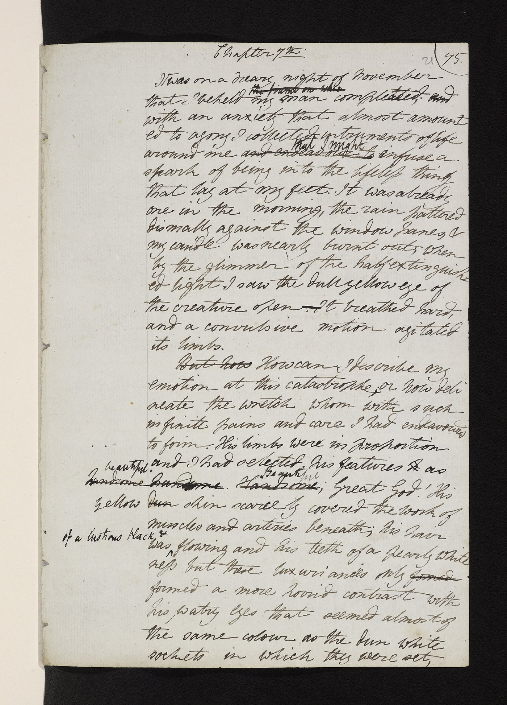
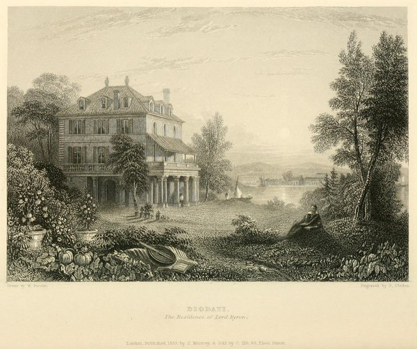
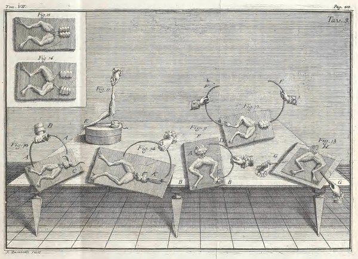
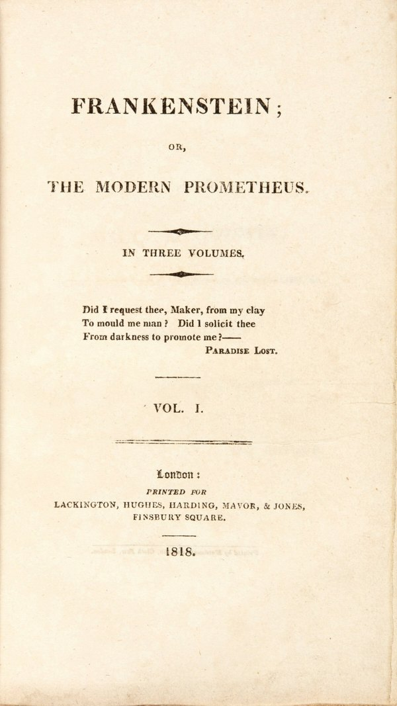

Have You Thought of a Story?
~11,816 after the ice, or 1816.

You can zoom this image to see it in detail. Once you've zoomed in, you can drag it to see any part you are curious about. You can also tap it to see a magnifier, which you can also drag.
Tap the page, and a magnifier appears there.
The page
This is a page from a notebook. The paper is more than two hundred years old, and the ink has gone brown. Two people have written on it. One of them wrote the lines. The other went over them afterwards, in a smaller, quicker hand, crossing out a word here and there and writing another above it.
At the top, in the first hand, it says Chapter 7th, and under that: It was on a dreary night of November that I beheld my man completed. Look at completed. She spelled it compleated first, and fixed it herself by writing over the letters.
Now go down about twenty lines, to where the student says what he had chosen for his creature's features. The first hand wrote handsome. The second hand has crossed it out and written Beautiful above it, and done it again in the margin to make sure. That is the word in the book today.
The first hand is Mary Godwin's. She was eighteen. The second is Percy Shelley's, the poet she was living with, who read her pages as she wrote them and changed a word where he thought he could better it. The book is Frankenstein, and the sentence at the top of the page was the first sentence of it she wrote. Everything before it in the book, she wrote afterwards.
This story is about the night before she wrote it.
The rain

In the summer of 1816 the poet Lord Byron rented a house on a hill above Lake Geneva, in Switzerland. Byron was twenty-eight and the most famous poet in Europe, and he had just left England, where a good many people were glad to see him go. With him was his physician, John Polidori, who was twenty and had been a physician for less than a year.
Ten minutes' walk down the hill, in a smaller house by the water, were three more English people. Percy Shelley was a poet too, twenty-three, not yet famous. Claire Clairmont was eighteen. And Claire's stepsister, Mary Godwin, was eighteen as well. Mary had grown up in London in a house where writers came to dinner. Her father was a famous one, and her mother, who died when Mary was eleven days old, was more famous still. The three of them walked up the hill to Byron's house in the rain nearly every day.
It should have been a summer of boats and walks. Instead it rained. It rained for days at a time, cold rain, in June, and the lake went grey and the mountains disappeared. Nobody in that house knew why. Nobody in Europe knew why. The reason was a volcano on the far side of the world, which had blown up the year before and thrown so much dust into the high air that the dust dimmed the sun for a year. That is its own story. Here it is enough to know that it rained, and five people were shut indoors with the candles lit in the afternoon.
The dare
To pass the time they read to each other. Someone had a book of ghost stories, German ones translated into French, and they read the stories aloud in the evenings with the rain on the windows. One night Byron said: we will each write a ghost story.
Everybody agreed. Then almost nobody did it. Byron wrote a few pages about a man who dies strangely in a graveyard in Turkey, and lost interest. Shelley started something about his own childhood and dropped it. Polidori had an idea about a lady with a skull for a head, who had been punished that way for looking through a keyhole, and he could not think what to do with her.
Mary had nothing.
Nothing
She wanted a story that would make the reader afraid to look behind her. She thought about it all day. Nothing came. She thought harder, and less came. She said later that it is the worst feeling a writer has: you ask, and nothing answers.
And each morning somebody asked, "Have you thought of a story?" and each morning, she wrote, she "was forced to reply with a mortifying negative." Mortifying is the kind of embarrassed that makes you want to leave the room.
The talk
What happened next did not happen while she was trying.
Byron and Shelley talked. They talked for hours, late into the night, about everything, and Mary sat and listened and said almost nothing. One night the talk was about life: what life is, whether anyone would ever find out what makes a body alive, and whether a dead body could be made to move again.
Shelley had heard that an English physician named Erasmus Darwin had kept a piece of vermicelli in a glass case until the vermicelli began to move by itself. Darwin hadn't, quite. The real story was about tiny animals in water, and the story had been garbled on its way across Europe. Mary knew that. When she wrote the talk down, she was careful to say she was reporting what people said Darwin had done, not what he did.

And there was electricity. Thirty years earlier an Italian named Luigi Galvani had made the legs of a dead frog kick by touching the legs with two metals, and ever since, people had argued about whether electricity was the thing that made living things alive. When Mary was five, in London, a man named Aldini had run electricity through the body of a hanged man in front of a crowd. The jaw moved. One eye opened. A hand clenched. The whole city talked about it, and Mary grew up in that city.
So perhaps a corpse could be brought back. Perhaps the parts of a creature could be put together and given warmth. That was the talk. It went past midnight.
The night
She went to bed and could not sleep. She lay with her eyes shut. Then she saw something.
It was not a dream. She was awake, and she said so.
She saw a student kneeling beside a thing he had put together. The thing was stretched out on the floor. It had the shape of a man. Then some engine was worked, and the thing stirred.
The student, sick at what he had made, ran from the room. He hoped the thing would die on its own. He slept. He opened his eyes, and the thing was standing by his bed, looking at him.
Mary opened her own eyes, frightened, and tried to get the real room back: the dark, the shutters, the lake she knew was out there beyond them. The picture would not go.
And then she saw what she had. What had frightened her would frighten anyone. She only had to write down what she had seen.
In the morning, when the question came, she said yes.
What she wrote
She began that day, with the sentence at the top of the page: It was on a dreary night of November. Everything in the book before that sentence was written afterwards, to lead up to it. A few lines down the same page, the student's candle is nearly burnt out and rain is pattering on the window. She had been listening to that rain all month.
She thought the story would be a few pages. Shelley told her it could be a whole book, and it took her most of a year. That is the notebook you are looking at: she wrote the book in it, in Geneva and then in England, and Shelley went over the pages as she went. By the time she finished she had married him and was Mary Shelley, which is the name people know her by now.
Afterwards

The book came out on New Year's Day 1818. There was no name on it at all. She was twenty. Nearly everyone who guessed guessed Shelley.
Within five years the book was a play in London, and the creature has not been off a stage or a screen since. The notebook stayed in the family for more than a hundred and fifty years. It is in a library in Oxford now, and anyone can look at every page of it online, with the two hands marked in two colours.
More
The name. The student is Victor Frankenstein. The thing he makes has no name; in the book it is the creature, or the wretch, or the monster. Nearly everyone now calls the monster Frankenstein, which is the maker's name, not the made thing's.
No lightning. Mary never says how the student does it; he refuses to tell, which is what makes the book a story about science and not a story about magic. The lightning, the bolts in the neck, and the flat head all belong to a film made in 1931.
The volcano was Tambora, in what is now Indonesia, and its story is the loudest sound in recorded history. The summer it spoiled is The Year Without a Summer.
Darkness. Byron sat in the same dim house that July and wrote a poem called "Darkness," about the sun going out. Tap Read the poem.
Polidori did not waste the summer either. He took Byron's abandoned pages, the man who dies strangely, and turned them into The Vampyre, the first vampire story in English. It was published in 1819 under Byron's name by mistake, which annoyed them both.
Ada. Byron had a daughter, six months old, whom he left behind in England that spring and never saw again. Her name was Ada. She has her own story, and it is about a machine.
Two accounts, and they don't agree. Mary told all this in 1831, when the book was fifteen years old and the publisher asked her how a girl of eighteen had come to write it. Polidori kept a diary that summer, and the two do not quite match. His diary says the ghost stories were begun "by all but me" on June 17; her account has her sitting blank for days. Most historians think the whole thing took a few days, not weeks, and that Mary, remembering fifteen years later, remembered the misery as longer than it was. Nobody can settle it. The diary is short, and hers is the only account of the night.
Two books. The book she wrote in 1816 and the book she revised in 1831 are not the same. The 1818 one is the stranger and the better, and it is the one to read.
Whose words? Percy changed a good many of Mary's words in that notebook: about three thousand in all, out of about seventy thousand. Some people have argued from this that he half wrote the book. The notebook says otherwise: the story, the scenes, and nearly all the sentences are in her hand, and his changes are the kind a reader makes in the margin. She was the one who saw the student kneeling. One change nobody can credit: by the time the book was printed, my man completed had become the accomplishment of my toils. The page where that happened was in a later, cleaner copy, and that page is lost.
I had a dream, which was not all a dream.
The bright sun was extinguish’d, and the stars
Did wander darkling in the eternal space,
Rayless, and pathless, and the icy earth
Swung blind and blackening in the moonless air;
Morn came, and went—and came, and brought no day,
And men forgot their passions in the dread
Of this their desolation; and all hearts
Were chill’d into a selfish prayer for light:
And they did live by watchfires—and the thrones,
The palaces of crowned kings—the huts,
The habitations of all things which dwell,
Were burnt for beacons; cities were consumed,
And men were gathered round their blazing homes
To look once more into each other’s face;
Happy were those who dwelt within the eye
Of the volcanos, and their mountain-torch:
A fearful hope was all the world contain’d;
Forests were set on fire—but hour by hour
They fell and faded—and the crackling trunks
Extinguish’d with a crash—and all was black.
The brows of men by the despairing light
Wore an unearthly aspect, as by fits
The flashes fell upon them; some lay down
And hid their eyes and wept; and some did rest
Their chins upon their clenched hands, and smiled;
And others hurried to and fro, and fed
Their funeral piles with fuel, and looked up
With mad disquietude on the dull sky,
The pall of a past world; and then again
With curses cast them down upon the dust,
And gnash’d their teeth and howl’d: the wild birds shriek’d,
And, terrified, did flutter on the ground,
And flap their useless wings; the wildest brutes
Came tame and tremulous; and vipers crawl’d
And twined themselves among the multitude,
Hissing, but stingless—they were slain for food:
And War, which for a moment was no more,
Did glut himself again;—a meal was bought
With blood, and each sate sullenly apart
Gorging himself in gloom: no love was left;
All earth was but one thought—and that was death,
Immediate and inglorious; and the pang
Of famine fed upon all entrails—men
Died, and their bones were tombless as their flesh;
The meagre by the meagre were devoured,
Even dogs assail’d their masters, all save one,
And he was faithful to a corse, and kept
The birds and beasts and famish’d men at bay,
Till hunger clung them, or the dropping dead
Lured their lank jaws; himself sought out no food,
But with a piteous and perpetual moan
And a quick desolate cry, licking the hand
Which answered not with a caress—he died.
The crowd was famish’d by degrees; but two
Of an enormous city did survive,
And they were enemies; they met beside
The dying embers of an altar-place
Where had been heap’d a mass of holy things
For an unholy usage; they raked up,
And shivering scraped with their cold skeleton hands
The feeble ashes, and their feeble breath
Blew for a little life, and made a flame
Which was a mockery; then they lifted up
Their eyes as it grew lighter, and beheld
Each other’s aspects—saw, and shriek’d, and died—
Even of their mutual hideousness they died,
Unknowing who he was upon whose brow
Famine had written Fiend. The world was void,
The populous and the powerful was a lump,
Seasonless, herbless, treeless, manless, lifeless—
A lump of death—a chaos of hard clay.
The rivers, lakes, and ocean all stood still,
And nothing stirred within their silent depths;
Ships sailorless lay rotting on the sea,
And their masts fell down piecemeal; as they dropp’d
They slept on the abyss without a surge—
The waves were dead; the tides were in their grave,
The moon their mistress had expired before;
The winds were withered in the stagnant air,
And the clouds perish’d; Darkness had no need
Of aid from them—She was the universe.
Mary’s World
References
Mary Shelley, Frankenstein; or, The Modern Prometheus (1818), and her Author's Introduction to the edition of 1831. Both texts are free at Project Gutenberg (#41445 and #84). The Introduction is where the rain, the dare, the talk, and the night come from.
The Frankenstein draft notebooks, Bodleian Libraries, Oxford, MS. Abinger c.56 and c.57, with every page and both hands online at the Shelley-Godwin Archive (shelleygodwinarchive.org). The page at the top of this story is from Notebook A.
Charles E. Robinson (ed.), The Original Frankenstein (Bodleian Library, 2008; Vintage, 2009): Mary's text and Percy's changes printed side by side, with the count of his words.
John Polidori, The Diary of Dr. John William Polidori, 1816, ed. W. M. Rossetti (1911), on the Internet Archive. The entries for 17 and 18 June are the other account of the dare.
Giovanni Aldini, An Account of the Late Improvements in Galvanism (London, 1803), for the demonstration at Newgate; and Marco Piccolino and Marco Bresadola, Shocking Frogs: Galvani, Volta, and the Electric Origins of Neuroscience (Oxford, 2013), for the argument the men were having.
Gillen D'Arcy Wood, Tambora: The Eruption That Changed the World (Princeton, 2014), for the rain.